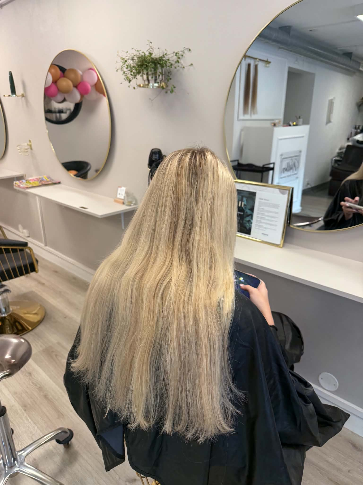
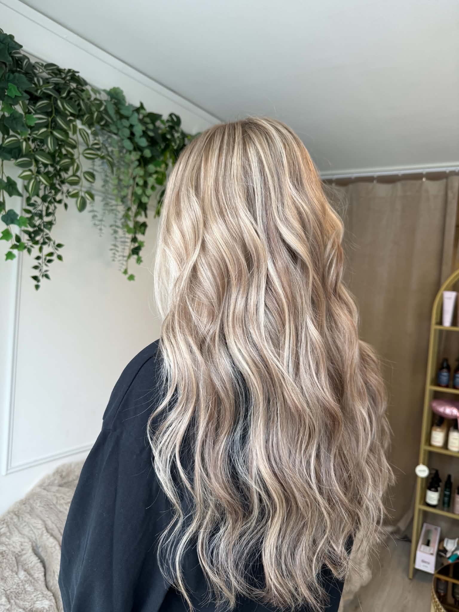
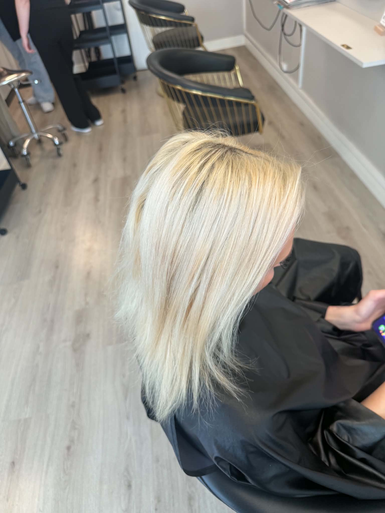
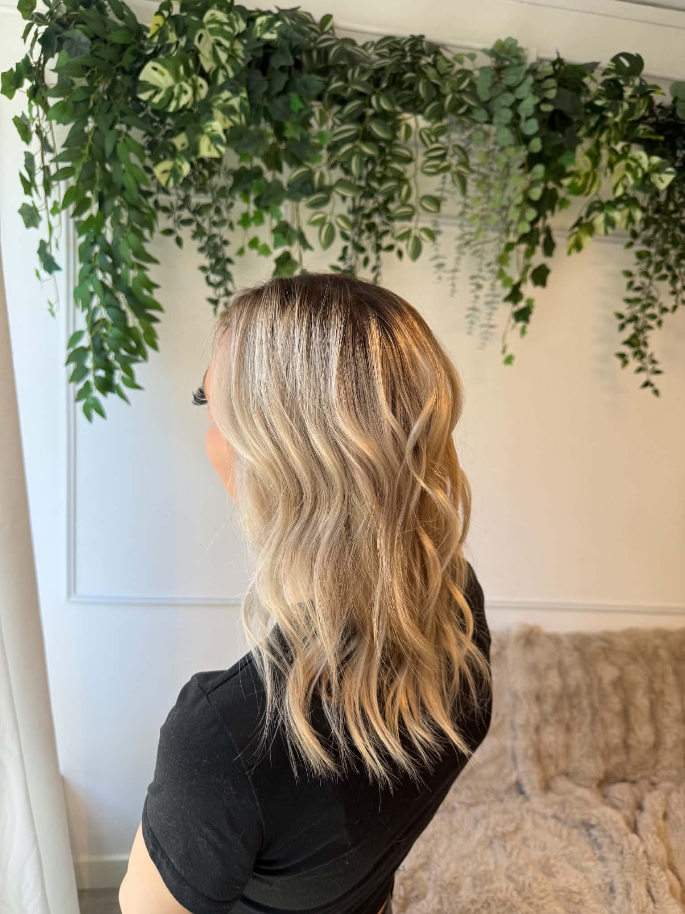

Klippning
Kort eller långt, klassiskt eller med textur — en klippning som passar dig och din vardag.
–

Frisör i Karlskrona
Klippning, färg och vård med lugn och omsorg. Jag arbetar på salongen Müllers vid Landbrogatan 11 på Trossö, mitt i Karlskrona.
Porträtt — bild kommer
Om mig
Jag heter Anny Morin och är frisör i Karlskrona. Mitt arbete bygger på att lyssna först: vilken hårtyp du har, hur du lever med ditt hår och vad du vill känna när du går ut dörren.
Just nu arbetar jag på Müllers., salongen på Landbrogatan 11 i centrala Karlskrona. Vi arbetar med bland annat ammoniakfri färg, balayage och vårdande behandlingar.
Vill du se mitt dagliga arbete? Följ mig på Instagram @mullers.anny.
Tjänster
Kort eller långt, klassiskt eller med textur — en klippning som passar dig och din vardag.
–
Ammoniakfri färg, slingor och balayage. Jag rekommenderar alltid en konsultation innan färg.
–
Vårdande behandlingar och håranalys — friskt hår är grunden för allt snyggt arbete.
–
Uppsättning och styling till livets stora dagar. Vi bokar en provfrisering i god tid innan.
–
Klippning och skäggtrim med kniv och kam, i lugn och ro.
–
Galleri
Två par levererade — fler bilder är på väg.

Bild kommer


Bild kommer
Boka tid
Demo — ingen bokning genomförs
Schemat är demo. Öppettider och verkliga tider bekräftas av salongen — bokning sker via telefon eller Instagram.
Före och efter — se resultaten innan du bokar.
Vill du se mitt dagliga arbete? Följ mig på Instagram.
Bokning sker via telefon eller Instagram — ring så hittar vi en tid.
Meddelande
Demo — skickas inte
Kontakt